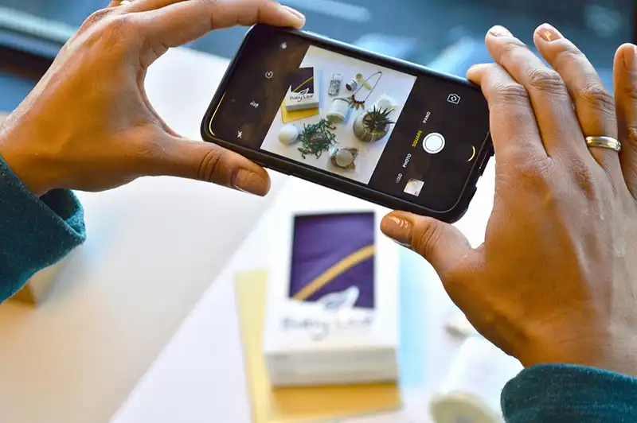

Качественные рекламные макеты, как и красочные аватары, требуются всем, кто раскручивает блог. Теперь для того, чтобы заинтересовать потенциальных фолловеров, одной только фотографии или скриншота с красивой «лентой» недостаточно. Поэтому, прежде чем рекламировать свой профиль, очень важно позаботиться о создании яркого продающего макета с провокационными тезисами и музыкой. Только в этом случае реклама может «сработать».
На помощь инстаграмерам приходят специалисты по разработке рекламных макетов. Сегодня в Instagram продаются целые онлайн-курсы для тех, кто решил присоединиться к их числу. Но при наличии доступа в интернет и базовых навыков работы с графическими редакторами вы можете легко освоить это дело. Для начала попробуйте установить на смартфон приложения Mojo, Instories и InShot и начните практиковаться.
Все получится, просто надо приложить не мало усилий для своей рекламы.